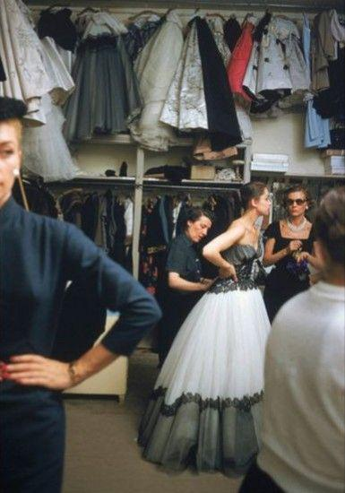
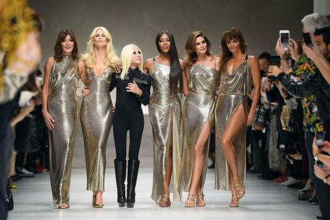

Ще у школі я обрала для себе професію дизайнер одягу. Мене дуже приваблював світ моди, і я почала детально його
вивчати. Це захопило мене ще більше, і я вирішила для себе, що стану його частною. Світ моди це завжди яскравість, енергія
та бурхлиже життя, ти завжди знаходишся в центрі уваги і живеш у режимі нон-стоп. Але це подобається мені.

Як я вже казала, я навчаюсь зараз на 2 курсі за спеціальністю "Технології легкої промисловості" і після закінчення
університету зможу працювати за спеціальністю і створювати одяг.

А, згодом, я звісно хочу мати власну справу, свій будинок моди, розробляти колекції та презентувати їх під власним
ім'ям.